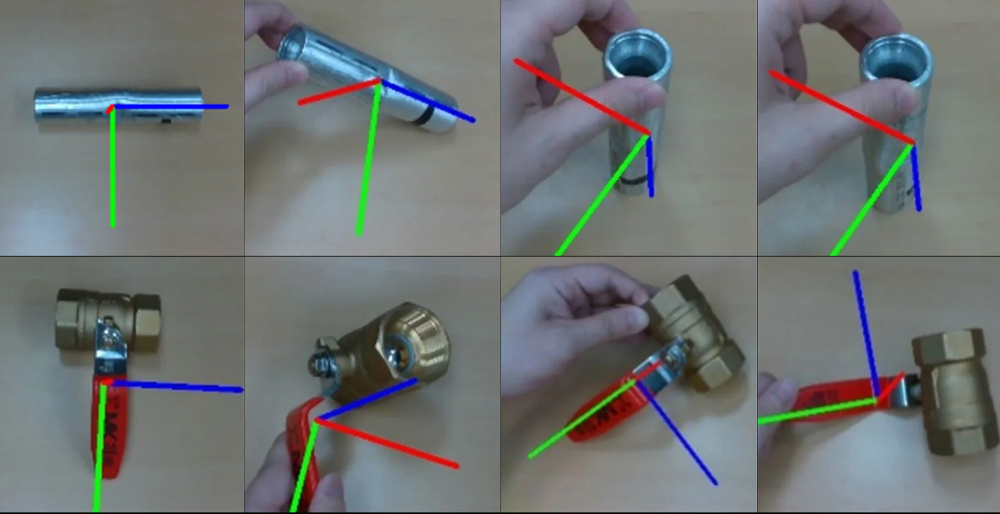

01 · ROBOT VISION
Zero-Shot 6D Pose Tracking for Sequential Robot Manipulation
A perception pipeline for unseen objects combining open-vocabulary detection, Segment Anything Model segmentation, online video segmentation, and BundleSDF for continuous 6D pose tracking from RGB-D observations.
Presented at ICCAS 2024 · Poster Session